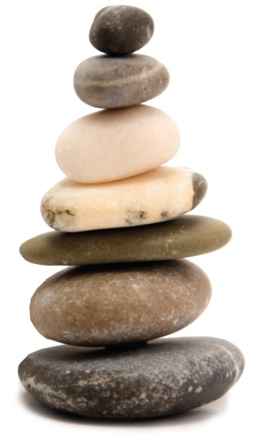
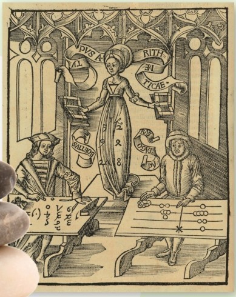
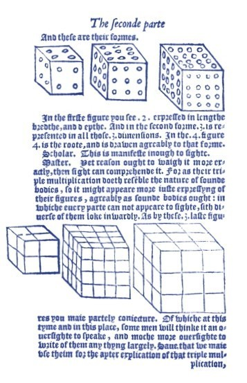
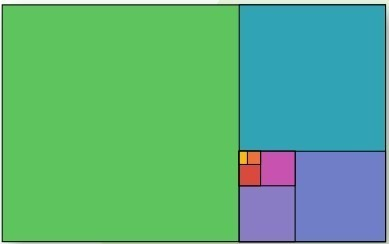
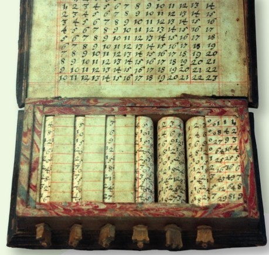
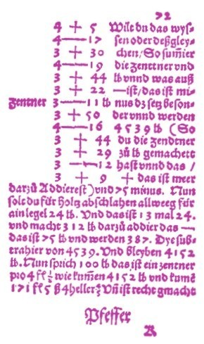
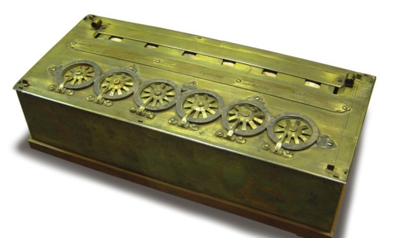
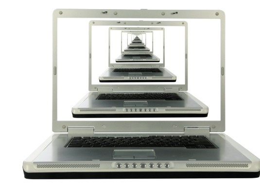
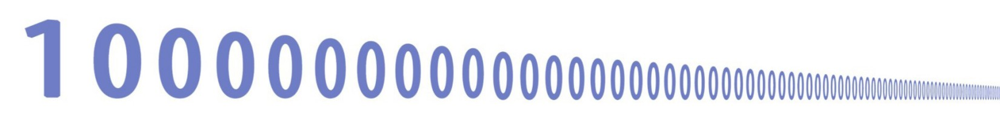

数学是我辈中许多人痛恨的学科，它洋洋洒洒，令人不知所为何故。那么，请读下去，去发现数学深处的故事。这本书会告诉你数学课和数学题从何而来，由谁而来，为何而来——或许后者尤为重要。
从数字开始
显而易见，数学从数字中来，从数量中来。我们学数学的第一步是知道如何计数，然后是加减，等等。这是数学之旅的开端，它通向更繁更强之道。但是，我们中的许多人，或许大部分人，就止步于此了。我们认为数学就是计算数字、背乘法口诀表、记符号和公式，又有何用？——不过下次测验求个高分而已。

小石头在拉丁文里称为“calculi”，现在英语里“calculate”这个词就来自用石块计数。

16世纪，两个算术家比赛用不同方式计数和计算。谁胜谁负？请看第24页。
向日葵的花盘符合一套数学系统——斐波那契数列。
量的叠加
然而，退一步来说，数学是变化的。数学最主要的形式——计数，是把我们的世界数字化的途径。我们可以数手指，数家人，数一日几餐。无论数的是什么，我们的计数系统都做同样的事。从第一个数字1开始，不断加1，直到得出我们要数的那个东西的确切数字。所以说我们数十指和数一日三餐用的是同样的技术。显然，这种记数法在做记录时用处甚大：数物，数钱，数其他的东西。无论得出的数字是多少，它就是那个东西的真实数量。你觉得这就是数学的意义了？还要三思哟。计数还创造了其他东西——数字本身。

数字可以看作几何图形。这些立方体表示前3个立方数8、27和64都是由边长为1的单位立方块组成的。

这个矩形很特殊，它可以分成与自己相似的越来越小的小块，划分方式被称为黄金分割。

17世纪，“纳皮尔的骨头”建立了一套快速计算的系统。

加号“+”是1360年发明的，它是法语词“et”的简写，意思是“和”。
数学是描写数字的语言
我们可以把1累加构成任何整数。也可以反过来从任何数中去掉1，那就是减法。乘法的规则也不新奇:仅仅是把数累加多次而已。除法是考察一个数累加多少次能成为另一个数。所以说，把1简单累加，我们就构建了第一套数学规则。它们自然有现实世界中的用途，也是通往新世界的轮毂。这个世界不是由星星和黑洞组成的，而是数字以不可想象的方式连接而成的。其实我们也不好说“不可想象”，因为数学本身就是纯想象。数字世界只存在于脑海，而且无边无际。几百年来，数学家找到了无涯的数字之海的模式和联系，在本书中你可以领略些许。一旦学会用数字思考，你的数学世界将非常美妙。更妙的是，这也会反射到现实世界。换言之，数学是我们描写世界的语言。

帕斯卡计算器是世界上第一台计算器。它是1645年由22岁的天才布莱兹·帕斯卡发明的。

无穷大是数学里最奇妙的思想之一。无穷大有多个种类，有的无穷大比别的无穷大更大！
数学无处不在，美国密苏里州的拱门里也有。

这个数是古戈尔数。它看起来大之又大，但是跟古戈尔普勒克斯数相比，它还是小之又小。